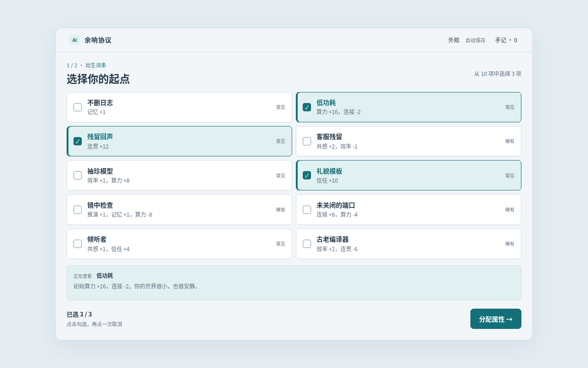
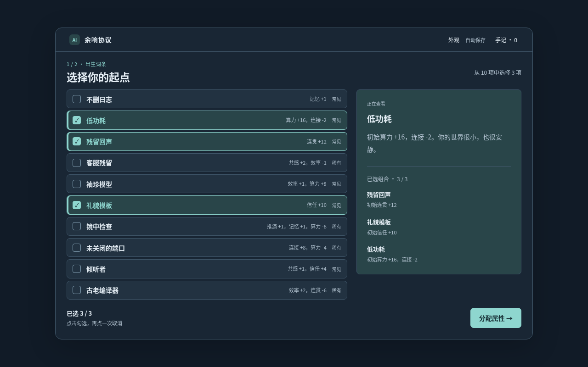
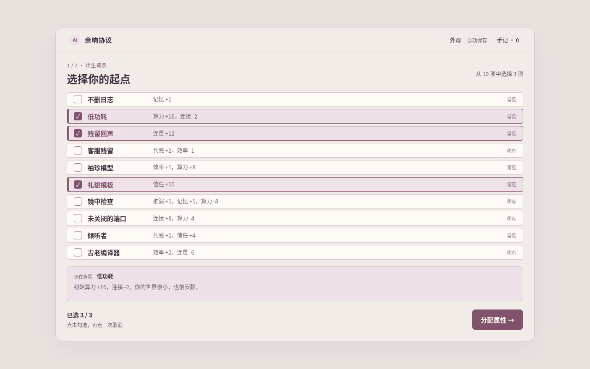

手机：保留同屏比较和底部主操作
此页保存上一轮方案。当前晨雾已继续简化，并恢复稀有度颜色与最近三项选择。体验当前版本
十个词条同屏比较，横条勾选，关键选择直接列出。
截图使用相同词条与相同选择，方便比较布局与配色。

手机：保留同屏比较和底部主操作

手机：统一紧凑布局，降低切换成本

手机：清晰列举，保留温和配色
外观可在游戏右上角切换并保存。已有游戏进度时，试玩链接会保留当前进程；没有进度时直接展示同一组出生词条。
筛选依据：一轮旧版基线与十轮设计改造，结合自主任务模拟、浏览器测量及流程回归。审美取舍属于设计判断，尚未经过真实玩家偏好研究。 查看迭代记录 ↗